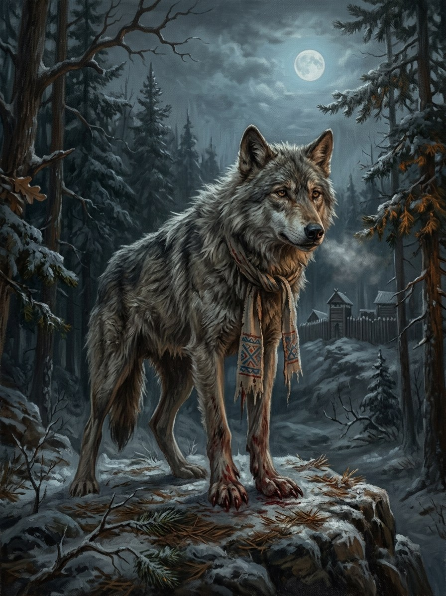

Vilkatas / vilkolakis (cursed werewolf)¶
Folk source [Historical record]¶
Lithuanian werewolf belief has two strands: a witch or sorcerer turns people into wolves (a whole wedding party in some tales) with a belt, hoop or spell; or a person turns himself by somersaulting over a stump with a knife stuck in it, and if someone pulls the knife he cannot change back. A werewolf is restored by bread on the tip of a knife, or by being called by name. Olaus Magnus (1555) describes werewolves gathering on Christmas night in Prussia, Livonia and Lithuania to drink cellars dry; Herodotus (4.105) says the Neuri became wolves for a few days each year.
Vilkatas / vilkolakis (cursed werewolf)

Vilkatas / vilkolakis (cursed werewolf) · creature — Image: Lucas Cranach the Elder, Public domain via Wikimedia Commons¶

Tipas |
būtybė |
Status |
Sagos išmonė |
Pastaba |
Bestiary §12. Danger III. Not the sworn Vilkatai of the Dykra (see Iron Wolves). |
In the saga (where the folk are half-wrong)¶
One word covers two things. (1) The cursed vilkolakis: an ordinary person changed by a bargain, real flesh-change, Velnias’s craft sold through raganos; the victim keeps a human mind for a season, then loses it. (2) The sworn vilkatai, the wolf-brotherhood of the Dykra, who are men and do not change shape (see Vilkatai (Iron Wolves)). Bread-on-a-knife cures the cursed, because bread is courtesy and iron reminds the flesh it was human; it only offends a sworn vilkatas. Galminas’s beast-rage is a third thing, the Root-Mother’s possession, and should not be called vilkolakis.
Signs & habitat¶
A wolf that hangs around one village and will not attack its people; a wolf with human eyes; a stump with a knife in it at a crossroads.
Before / after the Unbinding¶
Before: rare, a ragana’s worst curse. After: with raganos learning from Velnias, curse-belts multiply and whole hamlets of runaways and debtors are turned.
Banes, wards, bargains, and their cost¶
Bread on the tip of a knife offered to the wolf (you must stand within reach of its jaws). Call the person by name (if you are wrong, you have just told a hungry wolf your name). Burn the belt that made it (you must take it from the ragana). Pulling the knife from the stump traps the self-changer as a wolf forever: someone’s son.
Danger level¶
III dangerous, before and after.
Story hooks¶
Books II–V: a vilkatas of the brotherhood hunting a cursed vilkolakis who turns out to be his own brother.
Ryšiai
Servant of: Velnias — Curse-belts are Velnias’s craft, sold through raganos.
Origin [Historical record] werewolf belief (Olaus Magnus 1555; Herodotus 4.105) · [The saga's invention] two things under one word
Tier Bought power · Velnias's craft sold through raganos (the cursed vilkolakis, not the sworn brotherhood)
Danger III dangerous, before and after
Habitat The edge of one village; a stump with a knife in it at a crossroads
Wants The way back to human shape, while a human mind lasts
Takes A person's shape and, after a season, their mind. After 1387 whole hamlets of runaways and debtors are turned
Signs A wolf that hangs around one village and will not attack its people; a wolf with human eyes
Banes Bread on a knife-point; the true name; burning the belt that made it
Half-wrong truth. The folk use one word for two things. The cursed vilkolakis is real flesh-change by a bargain. The sworn vilkatai of the Dykra are men who do not change shape (only their eldest, rarely). Bread on a knife cures the cursed and only offends a sworn wolf.
Why the knife works. Bread is courtesy and iron reminds the flesh it was human. Galminas's beast-rage is a third thing: the Root-Mother's possession of her host.
The curse-belt. Raganos sell the change. Forces are not bound by the Law of Truth, which is why real flesh-change is possible at all.
The human mind. The victim keeps it for a season, then loses it.
Bread on the knife. You stand within reach of its jaws.
The name. If you are wrong, you have just told a hungry wolf your name.
The belt. You must take it from the ragana.
Pulling the knife from the stump. Traps a self-changer as a wolf forever. Someone's son.
Sąsajos¶
graph LR
velnias["Velnias"]
vilkatas["Vilkatas / vilkolakis (cursed werewolf)"]
vilkatas -->|Servant of| velnias
style vilkatas stroke-width:3px